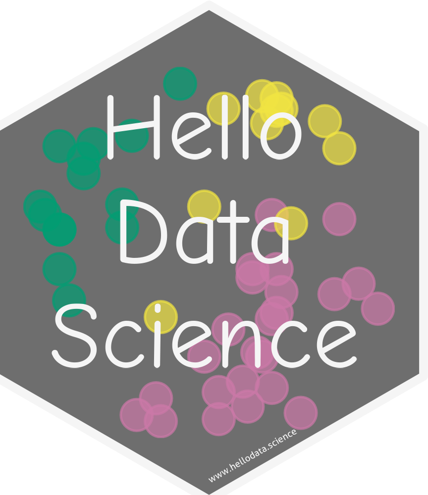
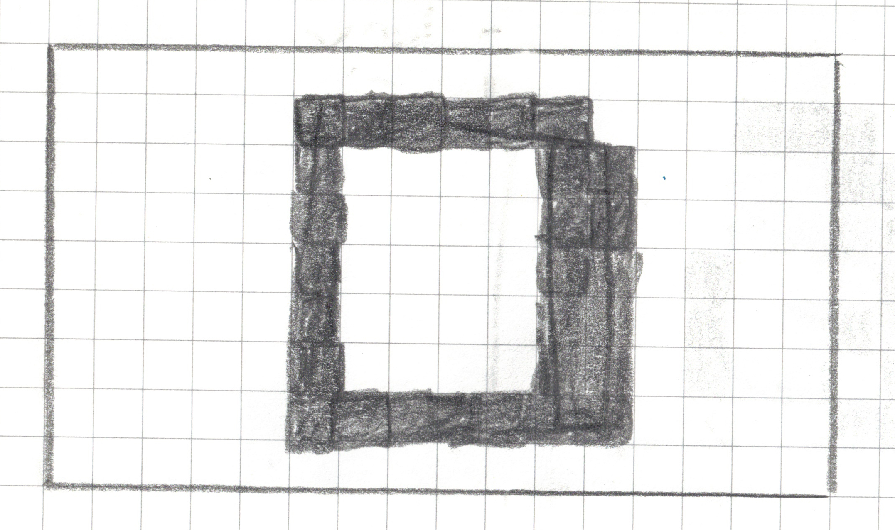
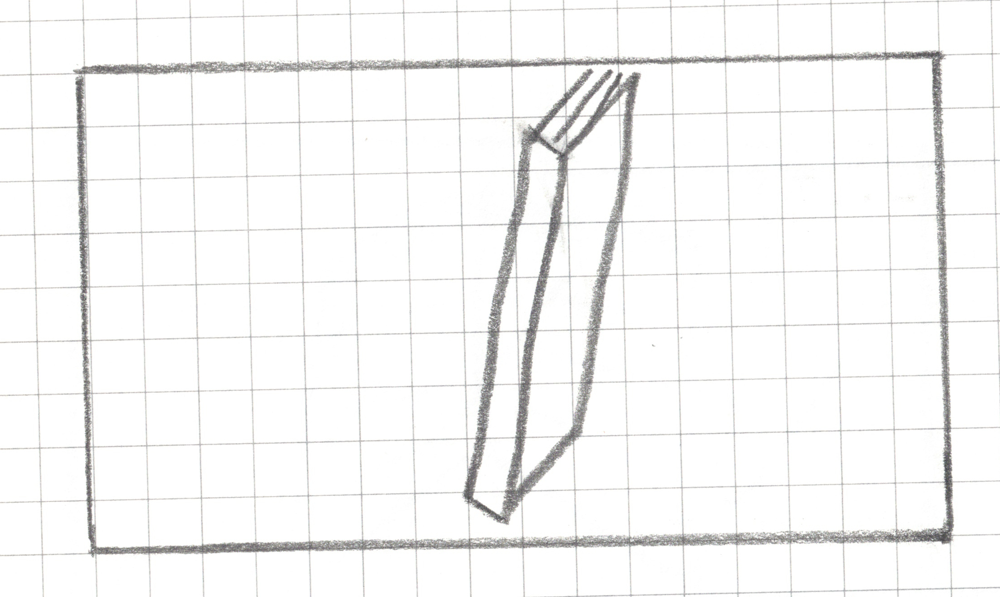
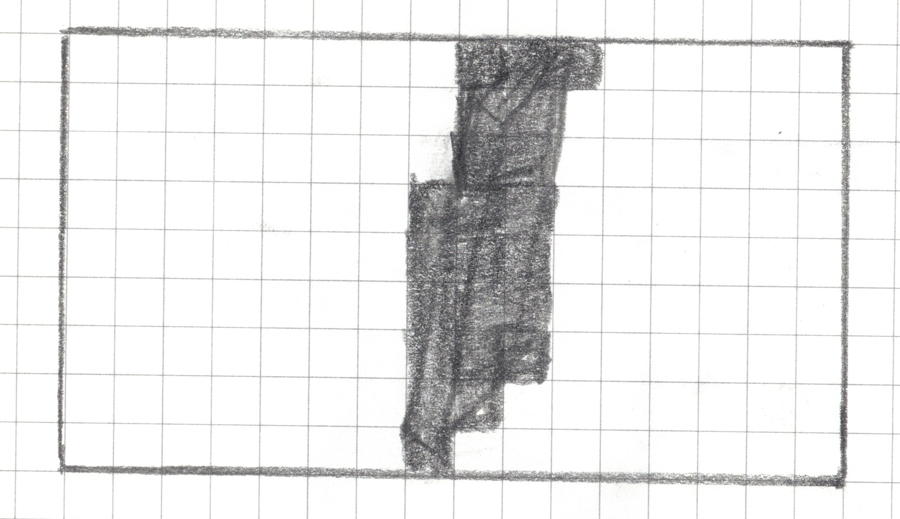

Introductory Data Science
eCOTS 2026 Breakout Session
Introductions (our team)
- California State University Channel Islands
- 1 year of experience teaching IDS, plus TA experience!
- Maximum of 25 students in each IDS class
- Most students take IDS for to satisfy GE, some are DS majors
- Cypress (Community) College
- 4 years of experience teaching IDS
- University of California, Irvine
- 5+ years of experience teaching IDS
Introductions (you!)
Let’s do a Zoom waterfall chat! Type in the chat:
- Institution type, and
- years of experience teaching IDS (Introductory Data Science)
Don’t hit send yet! We’ll let everyone know when to send together.
Breakout Session
In this session we will cover content, tools, and examples from our IDS courses
All of our materials are open access (e.g., online textbook, real data sets, and teaching activity!)
Curriculum
What do we mean by introductory data science?
We will start by sharing the topics we cover in our IDS, highlighting similarities and differences
Dogucu’s topics
- W1: Intro to R, Quarto, and GitHub &Describing data with numbers
- W2: Data visualization
- W3 & W4: Data wrangling & Good workflow practices
- W5: Webscraping & Midterm
- W6: Into to statistical inference & Beta-Binomial model
- W7: Bayesian inference
- W8: Frequentist inference
- W9: SLR
- W10: Multiple LR and Logistic Regression
Medina’s topics
- W1: Intro to R, Quarto, and GitHub
- W2: Data frames, variables, and summary stats
- W3: Data visualization
- W4 & W5: Data wrangling
- W6: EDA project
Project provides a nice pause!
- W7: Intro machine learning with SLR for prediction
- W8: Multiple LR and model selection
- W9: Logistic regression
- W10: Clustering
I’ve found this to be the unit students do best in!
- W11: Midterm & Into to statistical inference
- W12: Sampling distribution
- W13: Bootstrap confidence intervals
- W14: Work on final team project
- W15: Intro to probability distributions for modeling
Castros’s topics
- W1: Intro to R, Quarto, R packages, Importing datasets
- W2: Data frames, variables
- W3: Sampling techniques, Study design and ethics
- W4: Summarizing data numerically
- W5 & W6: Data visualization
- W7 & W8: Data wrangling
- W9: Midterm & Sampling distribution
- W10: Bootstrap confidence intervals and intro to hypothesis testing
- W11: Inference for numerical data (t-test) and for categorical data (chi-square test)
- W12: Simple linear regression
- W13: Multiple LR and model evaluation
- W14: Project
- W15: Logistic regression
What about you?
What is your favorite topic to teach in data science? (If not taught yet, what has been your favorite topic to learn?
Type your answer in the chat and we’ll let you know when to submit.
Tools
Even if your course differs in topics or tools, you can still benefit from individual parts of this session!
The three of us differ by topics, but all three of us teach IDS using
- R with tidyverse
- data-centered explorations
- open-access materials
We are developing an open-access textbook for IDS!
Hello Data Science

Released chapters
- hello woRLD
- Introduction to Data
- Data visualization
- Accessible Data Representations
- Dealing with Variables: Transformation & Aggregation
- Dealing with Specific Types of Variables: Strings, Dates, and Factors
- Dealing with Datasets: Joining, Pivoting, and Importing Datasets
- Tables, Functions, and Iterations
- Exploratory Data Analysis Project
- Reproducible Workflows for Data Science Projects
Highlights
- Real data sets from a variety of contexts
- Accessibility considerations and improvements
- Culturally aware data science
- Diagrams to explain DS concepts
- Example EDA project
- Reproducible practices with Quarto, GitHub, and style guide
Datasets
hellodatascience R package - CRAN hosted
- American Time Use Survey for undergrad students
- Economic measures for countries
- Micro FIFA confederations and 2026 World Cup datasets
- Planets
- Produce prices
sfemergency25 R package - GitHub hosted
Accessibility
Ch4: Accessible Data Representations
- Color-blind friendly colors with Okabe-Ito palette and
viridisR package - Data verbalization
- Data sonification
- Data tactualization
Diagrams
![Side-by-side schematic of a data frame and a subset of it. On the left, a table labeled data_frame shows four rows (1–4) and four columns named variable_1, variable_2, variable_3, and variable_4. The columns variable_2 and variable_3 are shaded in pink to indicate selection. On the right, a smaller table labeled select(data_frame, variable_2, variable_3) displays only the two shaded columns, variable_2 and variable_3, for the same four rows, illustrating how selecting columns reduces the data frame to those variables.](img/subset-columns.png)
Figure 1: Column wise subsetting of a data frame
Diagrams
![Side-by-side schematic illustrating row selection in a data frame. On the left, a table labeled data_frame shows four rows (1–4) and four columns (variable_1 to variable_4). Rows 2 and 3 are shaded in pink to indicate they are selected, while rows 1 and 4 are unshaded. On the right, a smaller table labeled filter(data_frame, condition) and slice(data_frame, row_indices) displays only the selected rows (rows 2 and 3) with all four columns preserved, demonstrating how filtering or slicing keeps rows that meet a condition.](img/subset-rows.png)
Figure 2: Row wise subsetting of a data frame
Diagrams

Figure 3: Diagram of the resulting dataset from a left join of datasets x and y
Example EDA
Ch 9 Exploratory Data Analysis Project
Ch 10 Reproducible Workflows for Data Science Projects
- Utilizes CDC PLACES dataset with 40 measures across the US at 4 geographic levels
- Accomanying GitHub repo shared
- Educators can assign other locations and/or public health measures for individualized projects
Classroom Activity
Inspired by USCOTS 2025 workshop by Anna Fergusson
From sketchy intuitions to imperfect rules: Using digital image data from drawings to introduce informal classification models
Step 0: Get into teams of 4 - 5
Step 1: Familiarize yourself with your landscape drawing area, 16 squares by 9 squares
Step 2: Draw _______ within your drawing area in less than 15 seconds without showing it to your teammates.
Step 2: Draw a book within your drawing area in less than 15 seconds without showing it to your neighbors.
Step 2.5: Now you can take a look at each others’ drawings.
An example:

Step 3: Pixelate your drawing
For any square that has a line, a dot or any pen/pencil mark, shade the whole square.

Step 4: Write your algorithm
Use your drawing as well as the drawings of your teammates (only your teammates) to come up with an algorithm (a set of rules) that can identify an open book. In other words, the algorithm should should identify whether the drawn book is open or closed.
MY CLASSIFICATION ALGORITHM
Algorithm Name: _______________________
My Rule (write it step-by-step):
1. ____________________________________________________
2. ____________________________________________________
3. ____________________________________________________
4. Classification Decision:
if _________________ then predict “open”.
else predict “closed”.
The Vertical Gap Scanner
Go through the image one row at a time, from top to bottom.
For each row, check if it qualifies as a “Gapped Row.” A row is a “Gapped Row” if it meets both of these conditions:
- It has at least one filled-in square.
- It has 3 empty squares between its leftmost filled square and its rightmost filled square.
The Vertical Gap Scanner
Count the number of gapped rows and save it as
gap_row_count.Classification Decision:
ifgap_row_count>= 1thenpredict “open”.
elsepredict “closed”.
Step 5: Test your model
| image_id | actual_class | predicted_class |
|---|---|---|
| 1 | ||
| 2 | ||
| . | ||
| . | ||
| . | ||
| 9 | ||
| 10 |
Image Example 1

actual_class = closed
Image Example 1

predicted_class = ?
Image Example 2

actual_class = open
Image Example 2

predicted_class = ?
Image Example 3

actual_class = closed
Image Example 3

predicted_class = ?
More Testing Data
Model Evaluation
| Criteria | Predicted: OPEN | Predicted: CLOSED |
|---|---|---|
| Actual: OPEN | _________ (True Positive) |
________ (False Negative) |
| Actual: CLOSED | _______ (False Positive) |
________ (True Negative) |
Definitions and Discussions
What is an algorithm? What is a model?
Are there perfect models? What happens if we have perfect models?
Training vs. testing
Wrap up and Q & A
hellodatascience R Package with datasets
sfemergency25 R package with sf911 dataset
Keep up to date via Google Form link
Acknowledgements
We would like to thank the National Science Foundation (NSF) for funding the collaborative project #2123366 and #2123384. All authors have collaborated in this project, and it is this project that has supported improvements to our courses and creation of one of our courses.